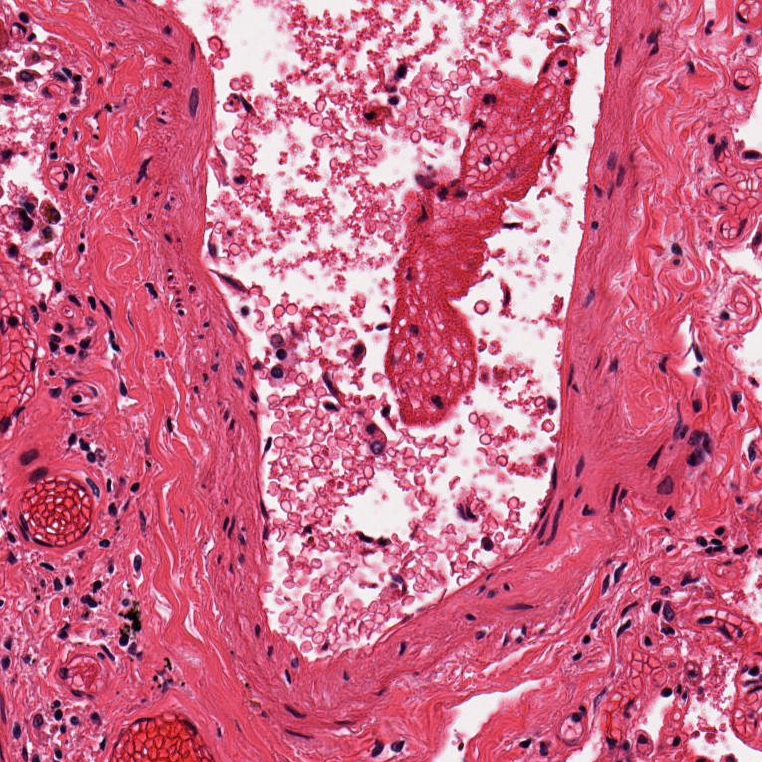

What a lung biopsy can tell you about how fast you're aging — building our own tissue-specific age predictor on real, pre-extracted pathology foundation model embeddings from 4,791 real GTEx tissue slides.
Aging doesn't happen evenly. Your liver, your skin, and your lungs can each be biologically "older" or "younger" than your birth certificate says — and those differences matter clinically, because organs aging faster are organs at higher risk.
Most of what we know about measuring this comes from blood: methylation clocks, protein panels, blood-based organ-age scores. A paper published four days before we wrote this course (Abila, Buljan, Zheng et al., Nature Medicine, Aug 14 2026) asked a different question: can you read biological age directly off the tissue itself, from an ordinary pathology slide?
They analyzed 25,712 whole-slide histopathology images across 40 tissue types from 983 people in the GTEx cohort, and built "tissue clocks" — deep-learning predictors of biological age from tissue architecture alone. Their clocks correlated with telomere attrition, subclinical pathology, and comorbidities, and predicted disease-relevant organ aging across eight conditions including Alzheimer's disease, stroke, and Crohn's disease. Mean prediction error: 4.9 years.
This minicourse builds a small version of that idea ourselves, end to end, on real data, with real (if humbler) results, and shows you exactly where the real engineering effort in a project like this actually goes.
Before going further, it's worth defining the term this whole course revolves around.
A biological aging clock is a computational model that takes some measurable signal from a person (a blood test, a DNA methylation profile, an image) and outputs a predicted age. Compare that prediction against the person's actual, chronological age, and the difference is the number every aging-clock paper is really chasing:
A positive age gap means the model thinks that person (or that specific tissue) looks older than their birthday says; a negative gap means it looks younger. The entire premise of the field is that this gap isn't noise: it correlates with real outcomes like mortality, disease risk, and organ function.
Most aging clocks are built from molecular data. DNA methylation patterns ("epigenetic clocks") and blood protein levels ("proteomic clocks") are the two most established families. A tissue clock, the kind this course builds, is a newer, third approach: instead of a molecular signal, it reads the physical structure of tissue itself, captured in a pathology image, and predicts age from what that tissue looks like under a microscope. Section 09 puts this in context against the wider clock landscape.
Before any model, it's worth actually looking at what we're working with. We pulled one real, de-identified slide from the GTEx histology archive.
That image looks small on this page. It isn't. The actual file is 41,831 × 20,575 pixels — about 861 megapixels. A typical phone photo is around 12 megapixels; this single slide is roughly 70 phone photos' worth of pixels, and pathology labs generate thousands of these. That scale is why whole-slide image (WSI) analysis is its own subfield of medical image computing: you cannot simply feed an image this size into a neural network. It has to be broken into tiles.
Zoom into the exact same slide, and here's what one tiny patch actually looks like at full resolution:

This is the level of detail a pathologist reads, and the level of detail a tissue clock has to learn from.
Going from an 861-megapixel image to a single number ("this tissue looks 57 years old") takes two steps.
Step 1: tile. The slide gets cut into a grid of small patches: 224×224-pixel tiles at 0.5 microns/pixel resolution, the same tiling the tissue-clocks paper's own released features use. A slide this size yields thousands of tiles.
Step 2: embed. Each tile is fed through a pathology foundation model, a neural network pretrained on massive amounts of histology data, which outputs a compact numerical fingerprint (an "embedding") capturing what's visually and structurally in that tile. The paper tested this step with 25 different feature extractors: 18 pathology foundation models (including CONCH, UNI, GigaPath, Virchow, TITAN, Phikon, and PRISM — several of the most prominent models in computational pathology today), a vision-language model, 5 ImageNet-pretrained CNNs, and one model fine-tuned by the authors themselves on GTEx.
We use CONCH (Lu et al., Nature Medicine 2024, Mahmood Lab), a vision-language model pretrained via contrastive learning on 1.17 million histopathology image-caption pairs. CONCH turns each 224×224 tile into a 512-dimensional vector. All the tile-level vectors for one slide are then mean-pooled into a single 512-dimensional slide-level embedding — one number per slide, per dimension, summarizing the whole tissue.
We use the exact CONCH embedding file the paper's own authors published, openly archived on Zenodo (10.5281/zenodo.20709093), 10.6 MB.
Also bundled in the same file, for free: Sex, Hardy Scale (a 5-category classification of how the donor died, from sudden/violent to prolonged illness), and free-text pathology notes from the original slide review. Age is bucketed into six brackets for donor privacy (20–29 through 70–79) — a real constraint we work within, not a simplification we chose.
One honest note: GTEx donors skew older, and our six age brackets are unevenly sized — 176 slides in the 70–79 bracket versus 1,681 in 60–69. That imbalance directly shapes what our model can and can't learn well, as you'll see in Evaluation.
This is the part that's genuinely ours.
Using only the pre-extracted CONCH vectors and the bundled age-bracket labels, we train a small model (gradient-boosted trees, HistGradientBoostingClassifier, scikit-learn) to predict a slide's age bracket from its 512-dimensional embedding.
We train one model per tissue, matching the paper's own tissue-specific framing (a "tissue clock," not one clock for all organs) — and we split by donor, not by slide, putting all of one person's samples entirely in either train or test.
Reporting only the wins would be dishonest, so here's everything — including the parts that didn't work well.
Five of six tissues clearly beat the naive baseline by 3–5 years of mean absolute error — real signal, learned from nothing but frozen foundation-model embeddings and a lightweight classifier.
The model is noticeably better at the youngest bracket (20–29, predicted correctly 35% of the time, more than double random chance for 6 classes) than at distinguishing older brackets from each other, where it increasingly collapses toward predicting "60–69" — a direct consequence of the class imbalance in section 05.
Does the age gap mean anything clinically? We checked this against the real Hardy Scale metadata bundled in the same file — a classification of how each donor died, something our model was never trained on.
Donors classified as "Ventilator case" (n=441, on a ventilator before death, a marker of prolonged critical illness) show a mean predicted age gap of +6.5 years, the largest of any group. Donors with an "Intermediate death" classification (n=74) show a negative mean gap of −3.0 years. This is a real, independently-computed association (the model was never told cause of death), and it echoes exactly the kind of clinical-relevance finding the original paper reports. We'd flag the Intermediate-death result as needing a larger sample before reading too much into it; the Ventilator-case result, with the largest sample in the dataset, is a more plausible real signal.
Everything above is reproducible in a few minutes, no GPU required.
Tissue clocks are one of roughly 30 biological aging clocks we catalogued while researching this course — spanning epigenetic (DNA methylation), proteomic (blood protein), and other modalities, in a companion open-source repository with ~19 of them vendored as ready-to-run Python packages.
One connection worth naming: the same paper that gives us tissue clocks also showed that tissue-specific age gaps can be predicted from blood gene-expression data alone, once you know the histology-derived age gap to train against — bridging the imaging-based approach in this course back to the blood-based omics clocks that dominate the rest of the field. Different data type, same underlying question: is this person's tissue aging faster than their birthday says?